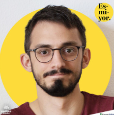
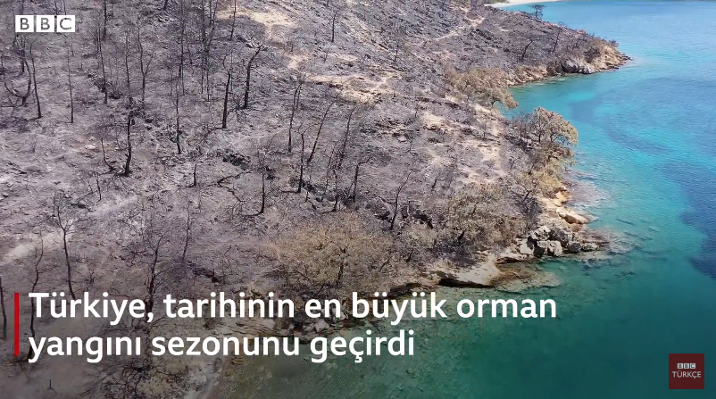
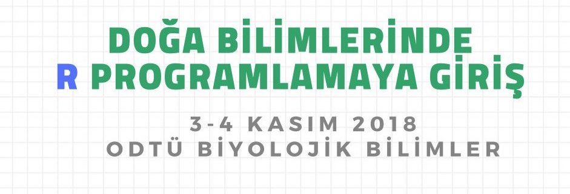

Dr. İsmail Bekar
About
Blog
Publications
Media
Categories
All
(6)

Orman yangınlarını unuttuk mu? - Esmiyor Podcast
Esmiyor ekibiyle beraber yangın mevsiminin yaklaştığı şu günlerde orman yangınlarını konuştuk. Podcast Spotify üzerinden dinlenebilir.
Jul 7, 2023

BBC Türkçe ile mini belgesel
BBC Türkçe ekibinden Efe Öç ile birlikte Bodrum’a giderek 2021 yılı yangın mevsiminin yanan alanlarını gezerek mini bir belgesel hazırlanmasına katkıda bulundum. BBC Türkçe Youtube kanalında izlenebilir.
Sep 16, 2021
Umut Yıldız ile yangın ekolojisi ve Akdeniz’deki yangınlar
Dr. Umut Yıldız ile birlikte Tek Çare Uzay kanalında yangın ekolojisi ve Akdeniz’deki yangınları canlı yayında konuştuk. Yayının kaydı Tek Çare Uzay Youtube kanalında mevcut.
Jun 7, 2021
İsviçre Hükümeti Mükemmeliyet Bursu
Bu blog gönderisi İngilizce ismi
Swiss Government Excellence Scholarship
olan ve benim İsviçre Hükümeti Mükemmeliyet Bursu diye Türkçe’ye çevirdiğim burs programına ait bilgileri içeriyor.
Dec 3, 2018

Doğa Bilimlerinde R Programlamaya Giriş
Bu yıl Bilgecan Şen ve Nurbahar Usta bile birlikte birincisini düzenlediğimiz Doğa Bilimlerinde R Programlamaya Giriş Çalıştayını 3-4 Kasım 2018 tarihlerinde ODTÜ Biyolojik Bilimlerde gerçekleştirdik.
Nov 15, 2018
TAF Network ile Röportaj
TAF Network ekibiyle yurt dışındaki bilim insanlarıyla gerçekleştirdikleri söyleşi zinciri kapsamında bir röportaj gerçekleştirdik.
Sep 3, 2018
İsmail Bekar
No matching items